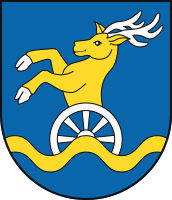

| Population | 719 537 |
|---|---|
| Males | 346 304 (48.13%) |
| Females | 373 233 (51.87%) |
| 0-14 years | 120 991 (16.82%) |
| 15-64 years | 472 770 (65.70%) |
| 65+ years | 125 776 (17.48%) |
| Major Nationalities | Slovak (86.19%), Hungarian (2.87%) |
| Major Mother Tongues | Slovak (85.91%), Hungarian (2.96%) |
| Major Religions | Roman Catholicism (42.63%), Atheism (39.85%) |
| Area | 2 052.6 km2 |
| Density | 350.55/km2 |
| Urbanisation | 78.85% |
| Largest Cities | Bratislava (478 040), Pezinok (24 506) |
| Highest Elevation | 759.1 m |
| Lowest Elevation | 113.9 m |
| Major Universities | Comenius University in Bratislava, Slovak University of Technology in Bratislava |
| Unemployment Rate | 2.3% |
| Average Monthly Earnings | EUR 2 066 |
| GDP Total | EUR 33.492 billion |
| GDP Per Capita | EUR 45 187 |